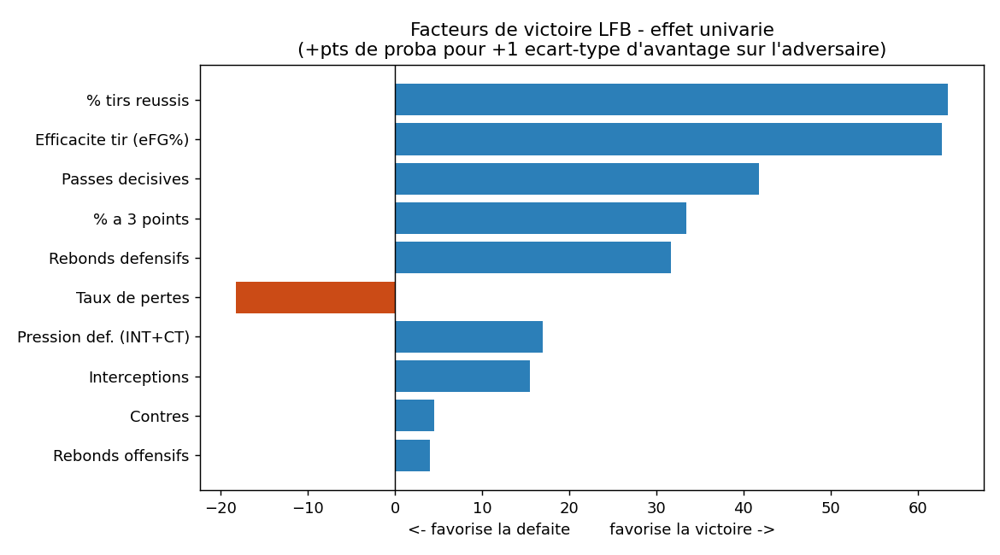
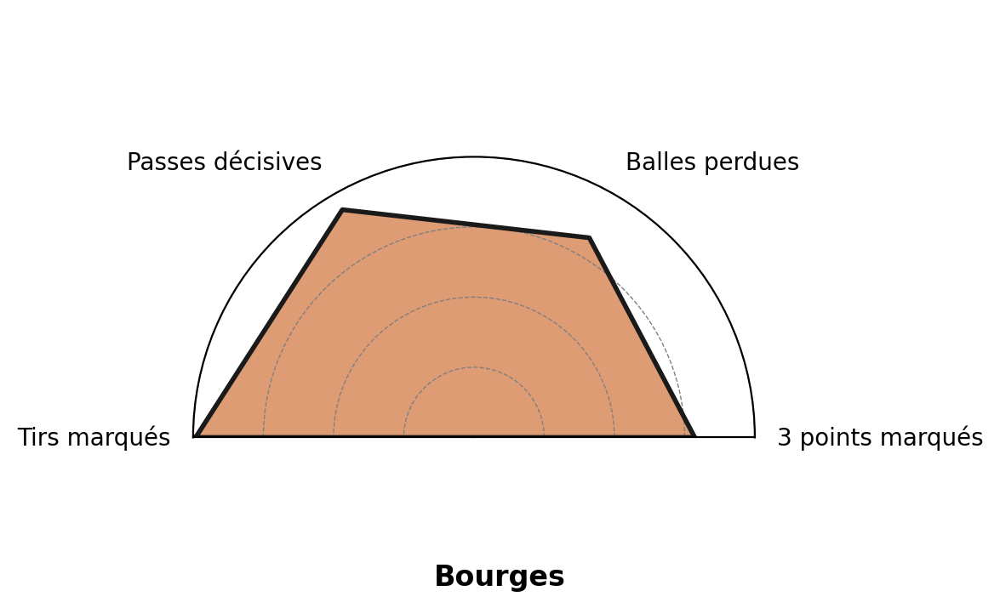
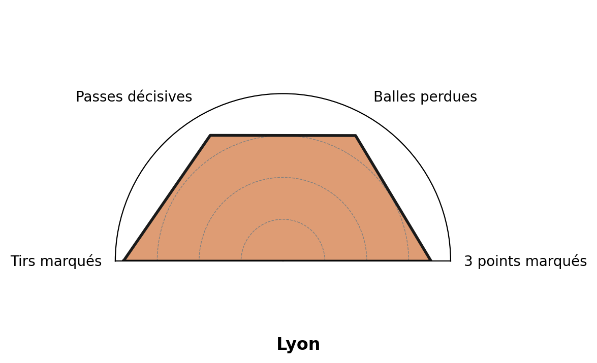
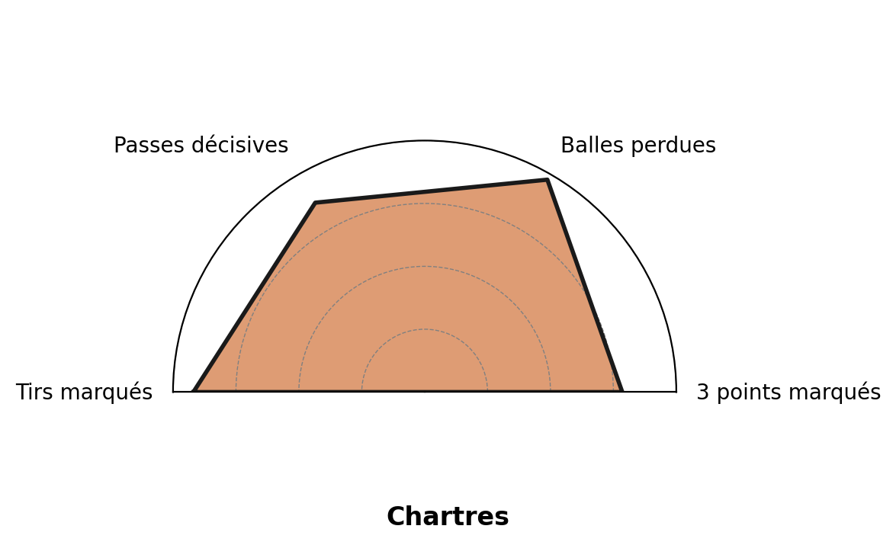
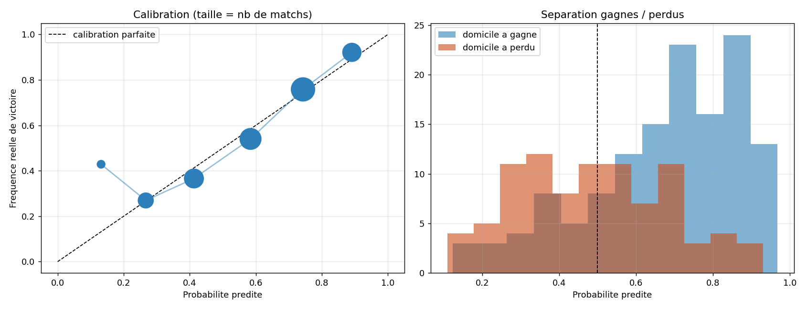

R6.06 - Domaines d'application de la statistique - Wonderligue
Qu'est-ce qui fait gagner ?
Et peut-on le prédire ?
La Boulangère Wonderligue - 12 équipes
2 saisons de stats (23-24, 24-25) + calendrier 24-25 et 25-26
Comprendre le besoin
À qui ça sert, et pour répondre à quoi ?
Un coach
Se préparer à un adversaire.
Un recruteur
Combler ce qui manque à l'équipe.
Un parieur
Anticiper un résultat avant le coup d'envoi.
L'enjeu commun
Transformer des stats brutes en décisions.
Problématique : quels facteurs font gagner en LFB, et lesquels permettent de prédire avant le match ?
Présentation des données
Trois sources, un extrait
- ① Stats joueuse × match (23-24, 24-25).
- ② Calendrier + ELO avant match.
- ③ Joueuses sur 11 saisons (2015-2026 : taille, âge, nationalité).
10 008lignes joueuses
264matchs
| Équipe | Joueuse | Min | Pts | Tirs | 3pts | RD | PD | EVAL |
|---|
| Angers | J. Bailey | 33 | 19 | 6/13 | 1 | 4 | 7 | 28 |
| Angers | M. Kaba | 36 | 16 | 6/13 | 0 | 7 | 2 | 9 |
| Angers | J. Wojta | 22 | 8 | 2/8 | 0 | 3 | 3 | 8 |
extrait de equipes_fusionnees.csv (48 colonnes par ligne)
Qualité · traitement des données
Un pipeline vérifié à chaque étape
1 · Fusion équipes
Fichiers par équipe → 1 jeu unifié.
✓ vérifié
2 · Fusion calendrier
Extraction du classeur Excel.
✓ 264 matchs
3 · Enrichissement ELO
ELO initial par équipe.
✓ 12 équipes
4 · Calcul ELO
ELO mis à jour après chaque match.
contrôle visuel
0 perte, 0 doublon : après chaque étape, un script recompte les lignes (source vs sortie), par équipe, par saison, ligne par ligne.
Méthodologie · d'où sortent les résultats
Comment on mesure un facteur
Principe : on raisonne en différentiel équipe − adversaire. Une stat ne compte que comparée à celle d'en face.
- 1 Pouvoir discriminant (courbe AUC). Un facteur seul suffit-il à deviner le gagnant ?
- 2 Modèle logistique multivarié + Random Forest. On pèse tous les facteurs ensemble ; deux méthodes qui se recoupent.
- 3 Tests de significativité (Mann-Whitney, bootstrap, Cohen). L'écart est-il réel et grand, ou un hasard ?
- 4 Walk-forward. On prédit des matchs jamais vus à l'entraînement.
Choix d'indicateurs · prise de recul
Pourquoi celui-ci, pas un autre
On a retenu
- eFG%
- Écart avec l'adversaire
- Points par possession
- Un seul indicateur par concept
On a écarté
- Points bruts
- Stats absolues
- Doublons (eFG + %tirs)
- Lancers francs
Résultat · les facteurs
Ce qui fait gagner
- 1 L'efficacité au tir (AUC 0,92).
- 2 Le collectif (passes) et le rebond défensif suivent.
- 3 Jouer à domicile vaut ≈ 3 points, à niveau égal.
- 4 Un cinq plus grand que l'adversaire → 68% de victoires.

Le livrable · page 1 de la brochure
Le radar de chaque équipe
Forces et faiblesses en un coup d'œil. Exemple du haut, du milieu et du bas de classement :

Bourges (1ᵉʳ)

Lyon (milieu)

Chartres (12ᵉ)
Prise de recul
Ces facteurs sont mesurés pendant le match.
« L'équipe qui a mieux tiré a gagné » est presque une tautologie.
Expliquer la victoire, ce n'est pas la prédire. Pronostiquer avant le coup d'envoi, c'est autre chose : on n'a alors ni l'adresse ni le score.
Question 7 · prédiction
Prédire avant le match
72%bons pronostics (hors échantillon d'entraînement)
+12 ptsvs « le receveur gagne » (60%)
< 1 rangerreur de classement dès la mi-saison
Notre hypothèse de parieur : on prédit avec le différentiel de points (public) et la forme récente, sans l'ELO qui n'est pas accessible. Validé en walk-forward.
Résultat : aussi fiable que l'ELO propriétaire.
Zoom méthode · validation
D'où sort ce 72% ?
# walk-forward sans ELO : différentiel + forme
for i in range(40, n): # on amorce sur 40 matchs
passe = matchs[:i] # UNIQUEMENT le passé
modele = LogisticRegression().fit(
passe[["d_diff", "d_forme"]], # public, pas l'ELO
passe["victoire_dom"])
proba[i] = modele.predict(matchs[i]) # jamais vu
- Pour chaque match, on entraîne le modèle uniquement sur les matchs précédents.
- On prédit le match suivant, qu'il n'a jamais vu.
- On compare prédiction vs réalité sur 224 matchs.
On teste chaque match sans jamais regarder le futur : la seule validation logique pour un pronostic de pari. (analyse/scripts_originaux/sans_elo.py)
Le livrable · page 2
72% de réussite, et pourtant non rentable.
| Cote minimale rentable (proba 65%) | 1,54 |
| Marge du bookmaker | ~6% |
| ROI en pariant les favoris | −5,5% |

Prise de recul · résultats négatifs
Ce qui ne fait pas gagner
- ✗ Le style de jeu
- ✗ Dépendre d'une star
- ✗ Les lancers francs
Conclusion
En LFB…
On gagne par l'efficacité, à domicile, avec un cinq plus grand.
Rien qu'en regardant le niveau des équipes, on devine le bon gagnant 2 fois sur 3. Mais 1 fois sur 3, c'est la surprise qui gagne, et même en visant juste, on ne bat pas les sites de paris.
Le basket garde une part d'aléa qu'aucun modèle ne capture.
Le livrable final
La brochure du parieur (2 pages)
Document remis au jury. Ouvrir la brochure (rendu_page2.html).
← → naviguer · F plein écran · P imprimer